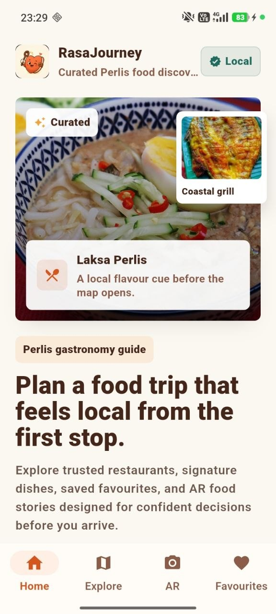
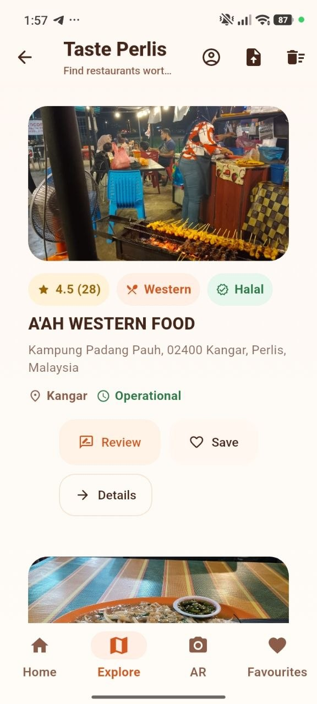
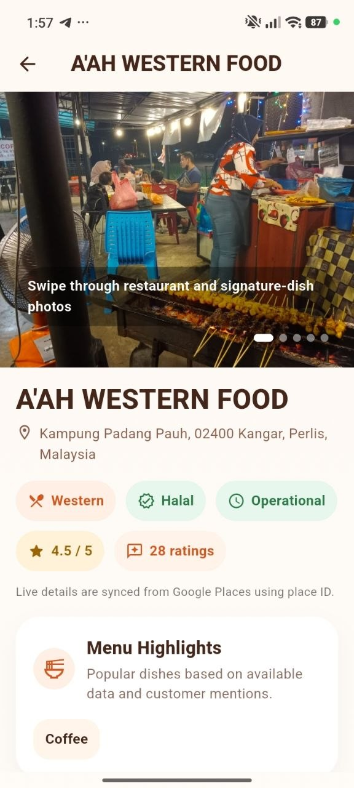
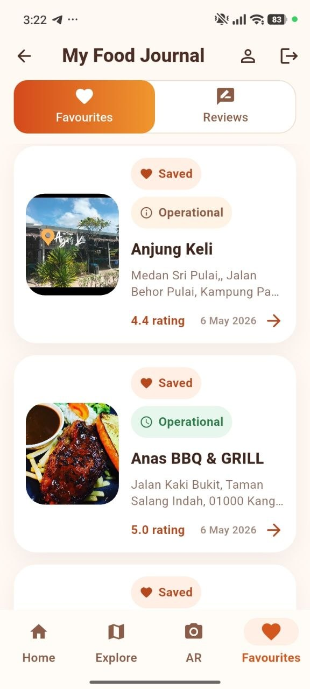
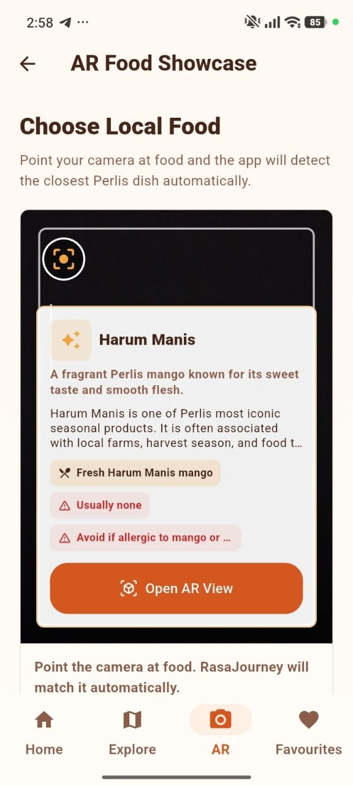

FINAL YEAR PROJECT · MOBILE APPLICATION
Gastronomy Tourism Mobile Application
A mobile application designed to help users discover food experiences in Perlis through location-based discovery, favourites, reviews and Augmented Reality.
APPLICATION SCREENS
Selected screens from the RasaJourney mobile application.

Home

Explore

Restaurant Details

Favourites

Augmented Reality
01 — OVERVIEW
RasaJourney is a gastronomy tourism mobile application developed to help users discover food experiences across Perlis implemented based on emotional design principles. The application combines location-based discovery, user reviews, favourites and Augmented Reality to create a more engaging tourism experience.
02 — PROBLEM
Visitors may find it difficult to discover local food experiences and obtain relevant information about food destinations in Perlis through a single platform.
03 — SOLUTION
RasaJourney provides a centralised mobile platform where users can explore food destinations, discover nearby experiences, save favourites and interact with food-related content.
04 — DESIGN PROCESS
RasaJourney was developed using a waterfall design process model, focusing on understanding user needs, designing an engaging experience and evaluating usability.
Analysed gastronomy tourism challenges and gathered user requirements to identify opportunities for digital solutions.
Designed application interfaces using Figma based on Emotional Design Principles.
Developed the mobile application using Flutter with Firebase as the backend database.
Conducted functionality testing and usability testing using the User Experience Questionnaire (UEQ).
05 — FEATURES
Discover food destinations and experiences across Perlis.
Find nearby food experiences using location-based features.
Save interesting food destinations for future visits.
Experience food-related content through an interactive AR feature.
06 — MY ROLE
07 — TECHNOLOGY
08 — EVALUATION
The application was evaluated using the User Experience Questionnaire (UEQ) involving 30 respondents to measure usability, user experience and overall acceptance.
Participants
UEQ Dimensions
Average Score Range
09 — OUTCOME
The project demonstrated how mobile technology, location-based services and Augmented Reality can be combined to create an interactive gastronomy tourism experience.